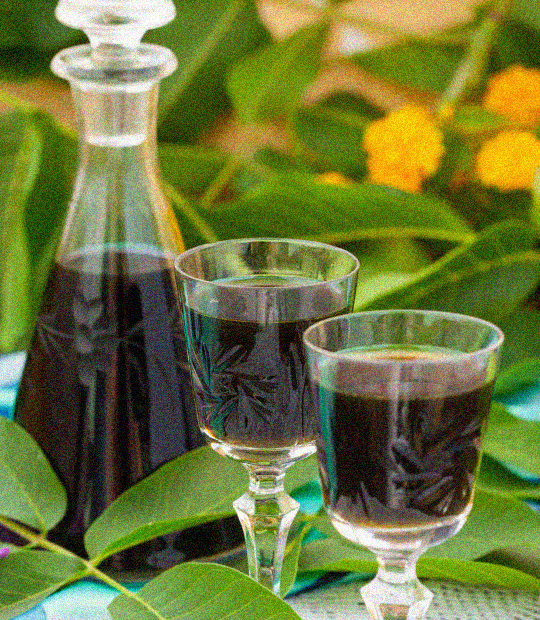

Liqueur de dattes
Ingrédients pour 1,5 litre de liqueur
- 1 gousse de vanille
- 15 dattes
- 40 cl de cognac
Préparation
- Réalisez la recette "Liqueur de dattes" directement en bouteille.
- Fendre la gousse de vanille en deux, retirer les noyaux des dattes et recouvrir avec le cognac. Laisser reposer 40 jours en agitant tout les 4 jours, filtrer en mettre en bouteilles.